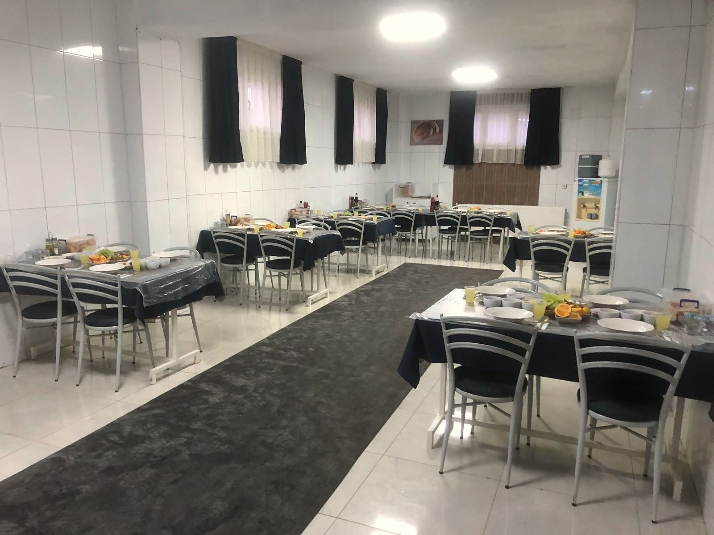
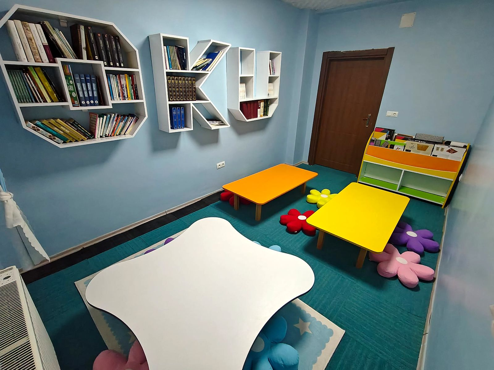

İdil · Şırnak
Evinden uzakta,
ailesinin güveninde.
Özel İdil Hilmiye Ortaokul Erkek Öğrenci Yurdu; ortaokul öğrencilerine güvenli, düzenli ve milli-manevi değerlerle desteklenen bir yaşam ortamı sunar. Akademik başarıyı ve güzel ahlakı birlikte büyütüyoruz.
Eğitimde Tam İsabet
- 120Öğrenci kapasitesi
- 7/24Belletmen gözetimi
- 3 ÖğünSağlıklı beslenme
- Her GünRehberli etüt
Hakkımızda
Ailelerimizin emanetine,
kendi evladımız gibi sahip çıkıyoruz.
2015 yılından bu yana İdil'de hizmet veren yurdumuz, ortaokul çağındaki erkek öğrencilerin hem derslerinde başarılı olmaları hem de karakter gelişimlerini sağlıklı bir şekilde tamamlamaları için kuruldu.
Deneyimli belletmen ve eğitimci kadromuzla öğrencilerimizin günlük yaşamını, ders çalışma düzenini ve sosyal gelişimini yakından takip ediyor; milli ve manevi değerlerimizi önemseyen, saygılı ve sorumluluk sahibi bireyler yetişmesine destek oluyoruz.
- GüvenÖğrencinin her an güvende olduğunu bilen huzurlu aileler.
- DisiplinDers, dinlenme ve uyku için düzenli bir günlük program.
- DeğerlerGüzel ahlak, saygı ve kardeşlik ruhu.
Hiçbir baba, evladına güzel terbiyeden daha üstün bir hediye vermemiştir.
Neden Biz?
Bir yurttan fazlası: ikinci bir yuva
Öğrencilerimizin akademik, sosyal ve manevi gelişimini birlikte gözeten bir yaşam alanı.
-
Güvenli Ortam
7/24 belletmen gözetimi, kamera sistemi ve kontrollü giriş-çıkış ile huzurlu bir yaşam alanı.
-
Etüt ve Ders Desteği
Her gün rehberli etüt saatleri, ödev takibi ve sınavlara hazırlık; bilgisayar laboratuvarı ve okuma köşesiyle destekli.
-
Manevi Değerler Desteği
Milli ve manevi değerlerimizle bütünleşen; güzel ahlak, saygı ve sorumluluk bilincini besleyen sohbet ve etkinlikler.
-
Sağlıklı Beslenme
Sabah, öğle ve akşam olmak üzere üç öğün, gelişim çağına uygun ev sıcaklığında yemekler.
-
Oyun ve Dinlenme Salonu
Hava hokeyi, langırt ve dinlenme köşesiyle ders aralarında sağlıklı sosyalleşme.
-
Veli İletişimi
Öğrencinin durumu hakkında velilerle düzenli bilgilendirme ve açık iletişim.
-
Temizlik ve Hijyen
Yatakhaneler, banyolar ve ortak alanlarda her gün düzenli temizlik.
-
Rehberlik
Ergenlik dönemine özel birebir ilgi; öğrencinin kendini ifade edebildiği güven ortamı.

Galeri
Yurdumuzu yakından tanıyın
Etüt sınıflarından bilgisayar laboratuvarına, yemekhaneden okuma köşesine; yaşam alanlarımızdan kareler.

Veli Görüşleri
Ailelerimiz ne diyor?
Örnek görüşler — yayından önce gerçek veli görüşleriyle değiştirilecektir.
Kayıt
Kayıt süreci dört adımda tamamlanır
2026–2027 eğitim-öğretim yılı kayıtlarımız devam etmektedir. Kontenjanlarımız sınırlıdır.
- 1
Bilgi Alın
Telefon veya WhatsApp üzerinden bize ulaşın, sorularınızı yanıtlayalım.
- 2
Yurdu Ziyaret Edin
Öğrencinizle birlikte yurdumuzu yerinde görün, kadromuzla tanışın.
- 3
Belgeleri Hazırlayın
Aşağıdaki belgeleri eksiksiz olarak hazırlayın.
- 4
Kaydı Tamamlayın
Kayıt formunu doldurup sözleşmeyi imzalayarak kaydınızı kesinleştirin.
Gerekli belgeler
- Öğrencinin nüfus cüzdanı fotokopisi
- Veli kimlik fotokopisi
- 4 adet vesikalık fotoğraf
- Öğrenci belgesi (okulundan)
- Sağlık durumunu gösterir belge
- İkametgâh belgesi
Sıkça Sorulan Sorular
Merak edilenler
Hangi öğrenciler yurdunuzda kalabilir?
Yurdumuz, ortaokula (5, 6, 7 ve 8. sınıf) devam eden erkek öğrencilere hizmet vermektedir.
Odalar kaç kişilik?
Yatakhanelerimiz 4 ve 6 kişiliktir. Her öğrencinin kendine ait dolabı bulunmaktadır.
Yemek hizmeti nasıl?
Sabah, öğle ve akşam olmak üzere üç öğün yemek ve okul dönüşü ara öğün verilmektedir. Menüler gelişim çağına uygun olarak hazırlanır.
Manevi değerler desteği neleri kapsıyor?
Öğrencilerimize güzel ahlak, saygı, dürüstlük ve sorumluluk bilincini kazandırmaya yönelik sohbetler ve etkinlikler düzenliyoruz. Amacımız, milli ve manevi değerlerine bağlı, karakterli bireyler yetişmesine katkı sunmaktır.
Veliler öğrencileriyle ne zaman görüşebilir?
Öğrencilerimiz her akşam serbest zamanda aileleriyle telefonla görüşebilir. Veli ziyaretleri hafta sonları 10:00–17:00 saatleri arasında yapılabilir.
Okula ulaşım nasıl sağlanıyor?
Öğrencilerimiz okullarına belletmen eşliğinde gidip gelmektedir. Servis bilgisi için bizimle iletişime geçebilirsiniz.
Yurt ücreti ne kadar?
Güncel ücret bilgisi ve ödeme seçenekleri için lütfen telefon veya WhatsApp üzerinden bize ulaşın.
İletişim
Sorularınız için buradayız
-
AdresYeni Mahalle, Okul Caddesi No: 12
İdil / Şırnak -
Telefon0532 000 00 00
-
E-postabilgi@idilhilmiyeyurdu.com
-
Ziyaret saatleriHafta sonu 10:00 – 17:00